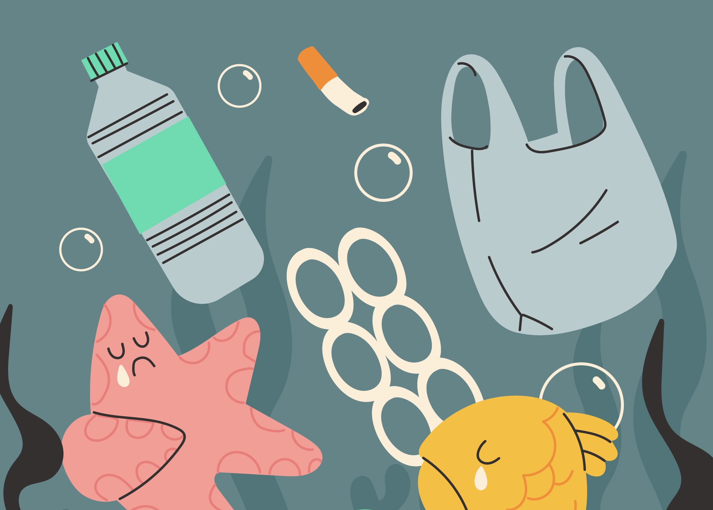
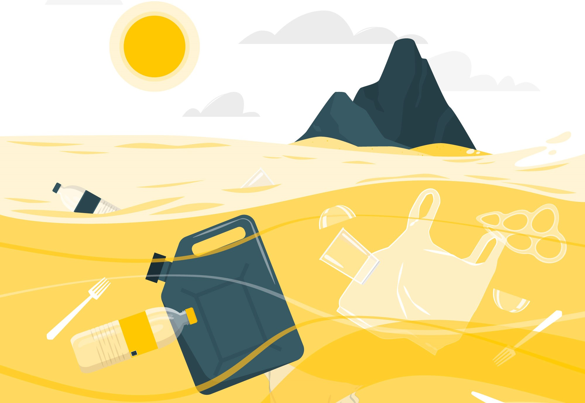
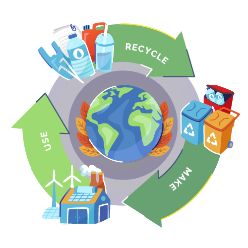

A não reciclagem emerge como um desafio urgente em face da preservação dos recursos naturais e do equilíbrio dos ecossistemas. A desconsideração deste processo crucial não apenas acelera o esgotamento de recursos vitais, como também propicia o aumento alarmante da acumulação de resíduos, culminando em sérios impactos ambientais, sendo uns dos principais ambientes, o marítimo.


A não reciclagem emerge como um desafio premente em face da preservação dos recursos naturais e do equilíbrio dos ecossistemas. Esta problemática é vividamente ilustrada por um vetor de poluição marítima, que revela as consequências diretas da negligência em relação à reciclagem.

Alguns continentes, como a Europa e a América do Norte, adotam amplamente práticas de reciclagem, reduzindo o impacto ambiental e promovendo a sustentabilidade. A reciclagem desempenha um papel crucial na gestão de resíduos, permitindo a reutilização de materiais valiosos, a economia de recursos naturais e a minimização do descarte em aterros sanitários. Além disso, essas regiões desenvolveram sistemas de coleta seletiva, facilitando a separação eficiente de materiais recicláveis nas residências e empresas.
- Tenta conhecer os símbolos da reciclagem
- Separa os materiais corretamente para os contentores
- Usa a política dos 3 Rs
- O vidro pode ser reciclado indefinidamente
- Reciclar uma tonelada de papel poupa cerca de 17 árvores
- Muitos eletrônicos podem ser reciclados